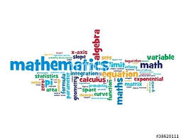

My name is Aaron Boulter. I live in Sanford, Maine.
My background
I have two undergraduate degrees: Computer Science and Mathematics. My masters degree is in Applied Statistics.
If your child is inneed of assistance in mathematics or computer science (programming), I am able to assist. My goal is to help your child learn material and be able to progress without needing my services.
I am able to tutor topics:
Mathematics
Basic Arithmetic
Algebra
Calculus
Statistics
Mathematica
Computer Science
Algorithms
Querying
Various Programming Lanugages
C#
C++
Other

Inquiry
If you are interested in my services, I am able to be initially contacted via text (2076502706) or email (aaron.boulter@gmail.com).